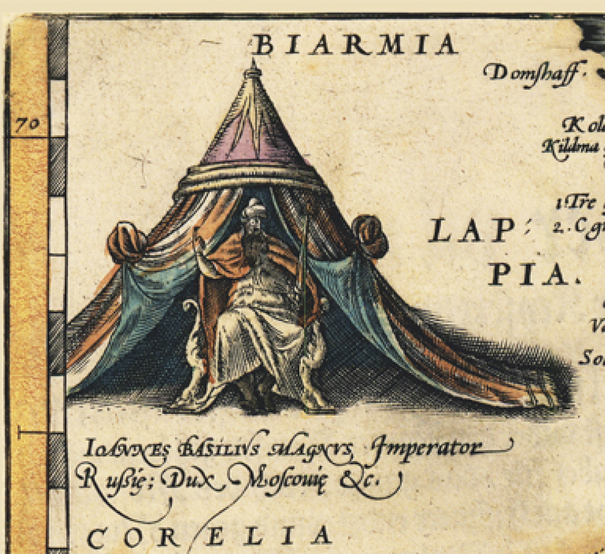
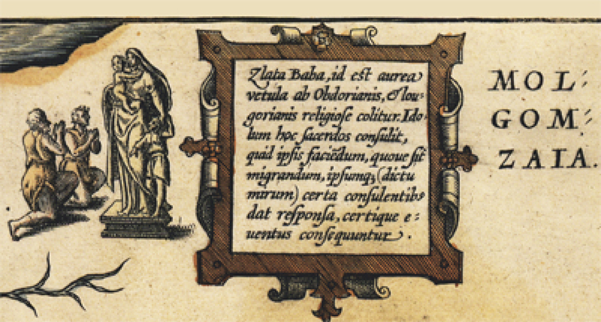
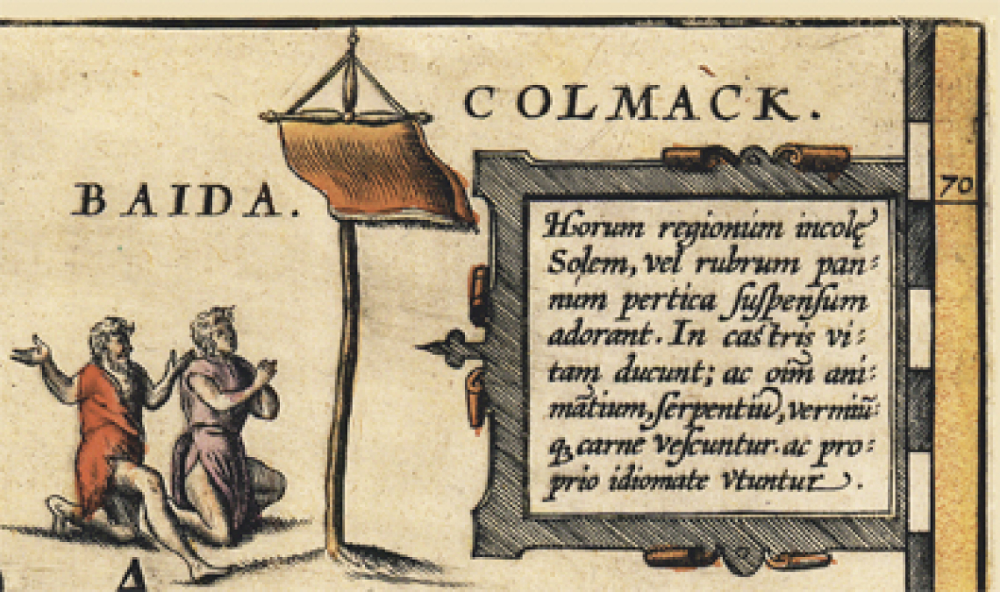
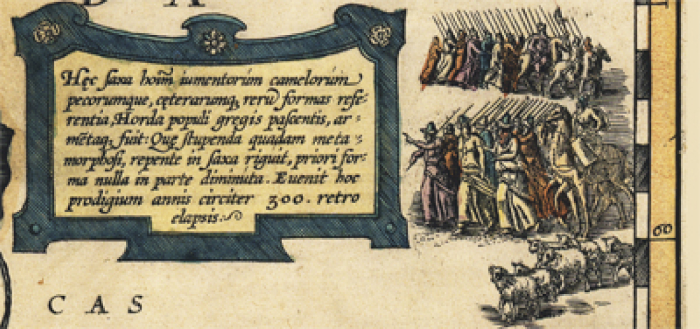
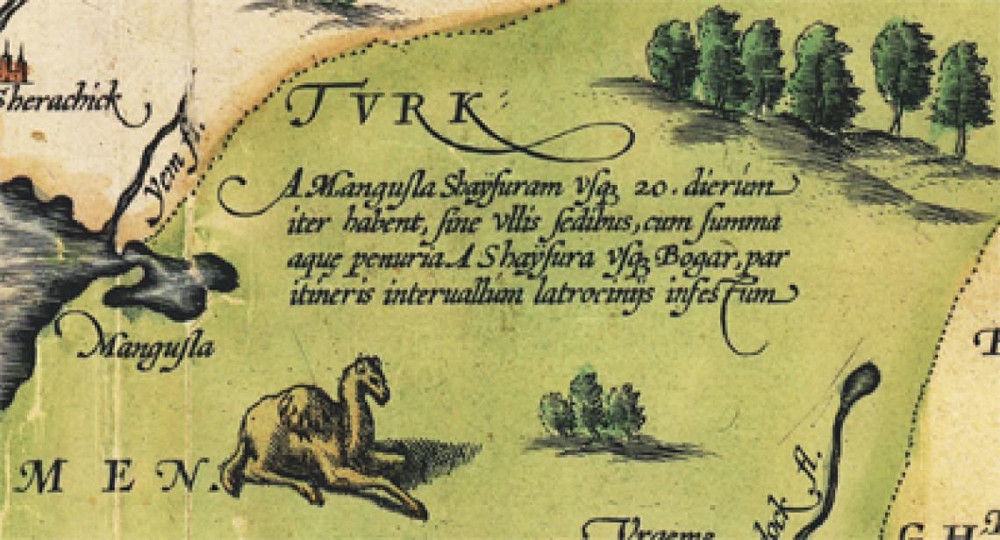
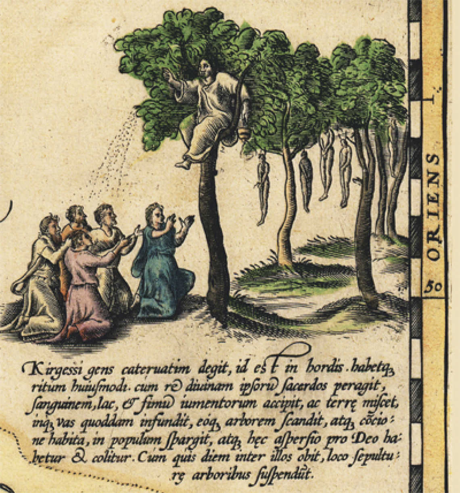
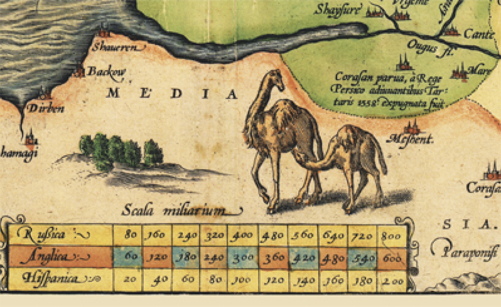
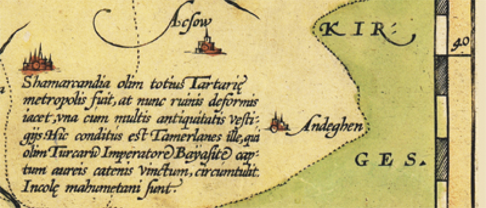
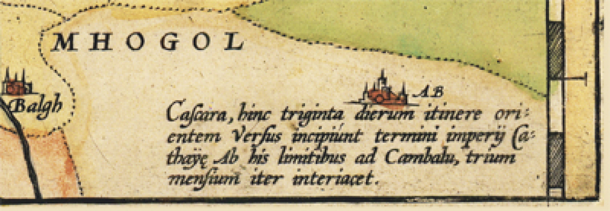

Обратите внимание, в левом верхнем углу запечатлен император Иван IV Васильевич (Грозный), а под ним
надпись: Ioannes Basilivs Magnus, Imperator Russie, Dux Moscovie - Иоанн Василевс Великий, Император России
и князь Московский. Во второй половине XVI века в мире никого не называли императором, кроме русского царя.
Были короли, князья, цари, султаны, а император был один. Так повелось еще с Византийской империи,
«Василевс» (по-византийски «император»), считался правителем мира. Однако, официальная история учит нас, что
первым российским императором был Петр I. Данная карта развенчивает это утверждение и приближает нас к
знанию настоящей истории нашей великой страны. И кто же тогда захоронен в Покровском соборе на Красной
площади: никому неизвестный Василий Блаженный или Василевс Блаженный (Блаженный император).

Необыкновенный интерес вызывают тексты с пояснениями к различным местам и областям необъятной
Тартарии.
Так, например, интересен текст о Золотой Бабе, легенды о которой дошли до наших дней. На эту тему были сняты
фильмы в советское время. На этой карте Золотая баба изображена в виде Сикстинской мадонны Рафаэля. Этот
образ был взят составителем карты, который никогда не видел настоящую статую. Текст гласит о том, что это
необыкновенное божество было культом народа той местности и давало ответы на вопросы, которые ей задавали.

В верхнем правом углу карты видно красное знамя и рисунок, поклоняющихся ему людей. Комментарий составителя
карты говорит о том, что люди этой местности (северная часть Сибири) поклонялись Солнцу, а в качестве
символа Солнца использовали красное полотнище. Интересно, что современное слово «красный» состоит из двух
частей «К РА», что значит «к Солнцу». При этом Ра отнюдь не древнеегипетский бог солнца, как нас учат
учебники, а исконно русский корень, означавший «солнце, свет, энергию».
Поэтому красный цвет, символизировавший свет солнца, наносили на флаг, к которому обращали свои молитвы, то
есть «к Ра». Это сочетание перешло на название данного цвета. В домах жителей того времени угол дома, рядом
с которым располагалось окно, обращенное к солнцу, назывался «красным углом», то есть обращенным «к Ра».
Это словосочетание прочно закрепилось в русском языке, сначала обозначая угол с образами для молитвы, по
аналогии с углом, где было окно, на которое молились солнцу, а позже, в советское время, «красными уголками»
называли информационные центры, где можно было проводить собрания, и где обязательно присутствовали портреты
вождей.
Если проанализировать эту информацию, то получается, что в дохристианскую эпоху культ Ра был распространен
по всей территории России, а не только на севере Сибири. Иначе все эти корни и слова не вошли бы в
общеупотребительный язык и не дошли бы до наших дней.
На этой карте также как и на карте Гесселя Герритса присутствует второе, старое название реки Волги - Ра.

«Скалы эти имеют человеческое подобие, а также сходство с верблюдами и другими животными, нагруженными
различной поклажей; присутствует там также и мелкий скот. Когда-то в далекие времена это была Орда,
представители которой занимались скотоводством, пасли мелкий и крупный скот; но в один момент по какому-то
волшебству они все превратились в камень и стали скалами, сохранив за собой подобие людей и животных. Это
чудесное превращение имело место 300 лет тому назад».

«Расстояние от Мангышлака до Шайсура 20 дней пути по земле, лишенной воды и безлюдной; от Шайсура до Бухары
такое же расстояние; на этом пути очень часто происходят разбои».

«Народ, именуемый Киргизами, живет скопищем, представляя собой Орду. Жрец Киргизов при богослужении, взяв
кровь, молоко, помёт вьючных животных и смешав все это с землёю, наполняет этим составом сосуд и забирается
на дерево. Когда он соберет под деревом соплеменников, он окропляет их сверху этой смесью. Ритуал окропления
имеет священный статус. Когда кто-либо из Киргизов умирает, они не предают покойника земле, а вешают его на
дереве».

«Малый Хорсан, который находится под управлением царства Персидского, был захвачен в 1558 г. тартарами».

«Когда-то Самарканд была главным городом всей Тартарии, а ныне город находится в руинах, утратив свое
прежнее значение; однако, древностей здесь осталось достаточно. Здесь захоронен Темерлан, который в свое
время пленил турецкого императора Баязита и в золотых оковах повсюду возил его с собой. Жители этого города
исповедуют магометанскую веру».

«В 30-ти днях пути до Кашгара на восток начинаются границы Китайской империи. От границы Кашгара до
Камбалыка три месяца пути».
Надо, однако, понимать, что сам Антоний Дженкинсон, составитель данной карты, не был ни в одном из этих
мест, и возможно вообще в России - Тартарии. А составил он свою карту по описаниям, дошедшим до него от
различных путешественников того времени.